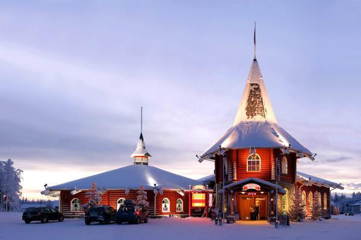
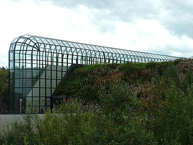

Capital de la Laponie région la plus au nord de la finlande
Son histoire
Rovaniemi a possiblement était habité depuis l'âge de pierre, on y retrouve des objets datant de 8000 avant notre ère.
Elle a commencé à subir une habitation plus dense à partir de 1100-1200 par des habbitants venant de Suède Norvège et Allemagne principalement.
Vers le 19ème siècle on y voit l'arrivé de nombreux migrans ammené par les promesses de richesse notamment via le bois et l'or.
Lors de la 2ème guerre mondiale la ville se voit rasé par des assaut allemand. Elle commencera à être reconstruite à partir de 1946.
Son éconnomie
Depuis le déclin des matières première la première source de revenue de la ville est l'état finlandais qui représente 45% des emploies de la ville.
Sa 2ème source de revenue est le tourisme, la ville attire beaucoup de monde grâce à ses différentes activitée qui attire des personnes venant de beaucoup de pays différents.
La ville possède aussi une usine qui assemble des motoneiges et autre véhicules de ce genre.
Les activités
Le village du Père Noël

C'est la destination touristique la plus populaire de Finlande, accueillant des milliers de visiteurs chaque année.
Le village se trouve à environ 8 km au nord-est du centre de Rovaniemi et à 2 km de l'aéroport de la ville.
Santa Claus Village est apparu en 1991 dans le premier épisode de la série documentaire de la BBC Pole to Pole, présentée par Michael Palin.
Arktikum

L'Arktikum est un musée et un centre scientifique situé au centre de Rovaniemi, en Finlande.
Il rassemble deux institutions séparées : le musée arctique de la Laponie, et le centre arctique. S'y trouvent aussi le café et la librairie Arktikum.
Les matériaux naturels locaux ont été abondamment utilisés. On y trouve ainsi des chaises en peau de renne et pin de Laponie. Les sols sont carrelés de granite de Perttaus, le granite le plus dur trouvé en Finlande.
Le vitrage extérieur, qui permet d'admirer les aurores boréales depuis l'intérieur du musée, couvre une galerie semi-enterrée de 172 m de long et n'est que la partie visible du musée
Le centre arctique héberge des expositions permanentes et d'autres ponctuelles sur l'environnement nordique ainsi que les minorités, notamment les Saamis et autres peuples natifs du nord de la Finlande.
Le musée provincial de Laponie montre les traditions des peuples nordiques et raconte l'histoire de la Laponie.
Le musée présente également un aquarium avec des espèces locales.
Activités annexes
La ville et son climat permettent des balades à pied ou en traineau ou motoneige.